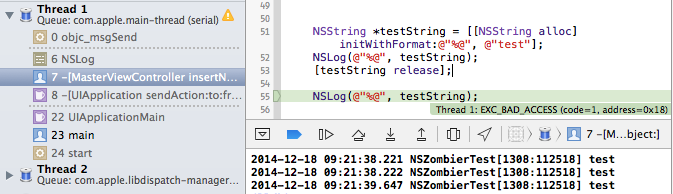
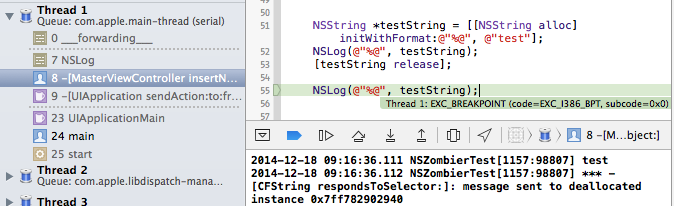

今天在cocoachina上看到一篇关于实现NSZombier的翻译贴，原文来自Mike Ash。此人是(Friday Q&A)的作者，更为神奇的是他白天是飞行员，晚上是程序员，这在天朝不可想像。本文主要是基于他以下两篇文章的笔记。
Friday Q&A 2011-05-20: The Inner Life of Zombies
Friday Q&A 2014-11-07: Let's Build NSZombie
启用NSZombier对象
有经验的开发者在遇到诸如EXC_BAD_ACCESS的错误时往往会设置NSZombieEnabled为YES，这样类似的错误发生后，就可以定位到出错的位置，从而便于诊断问题所在。
诸如此类的内存错误不管是MRC还是ARC下，都是会发生的。发生的原因在于：一个已经release的指针对象，又收到了某个消息，这时就会发生古怪。在MRC下，alloc一个对象A，然后release后，该对象所指向的内存被系统回收，标记为可用状态。根据程序运行的情况，该处内存可能过会被系统回收也可能马上分配给另一对象B。这时，如果程序还认为A对象存在，并发生某个消息给A时，就会发生错误。可以设计如下的测试代码：
NSString *testString = [[NSString alloc] initWithFormat:@"%@", @"test"];
NSLog(@"%@", testString);
[testString release];
NSLog(@"%@", testString);
该片段放置在某个点击事件中，当我们没有设置NSZombieEnabled时，运行一下：

测试的时候，快速点击了两下，可以发现console里输出了3次"test"，然后程序crash定位在release后的NSLog处。这说明release后系统可能会没有立即清理该处内存，导致可以输出该内存所存储的内容。
接下来，启用NSZombieEnabled，Xcode6中打开schema->Diagnostics->Enable Zombie Objects，然后测试：

console里输出了
[CFString respondsToSelector:]: message sent to deallocated instance 0x7fa52a7df560
这很明确的指明了错误发生的原因：给dealloc的对象发送了消息。所以在大型项目中，设置NSZombieEnabled后还是很便于定位内存错误。
这种给释放的对象发送消息还有可能发生一种错误，就是:
*** Terminating app due to uncaught exception 'NSInvalidArgumentException', reason: '-[__NSCFString xxxxx]: unrecognized selector sent to instance 0x7fdd626b2b90'
这是因为释放掉的内存被系统分配给另一个对象，而程序继续发送消息给原先的对象时，就很容易发生该类型错误。如果恰好新对象也有一个同名的方法，虽然不至于导致程序马上crash可造成的后果就可大可小了。因此如果程序crash然后console显示因为发送给某个没用到的对象一个程序内找不到的方法的错误时，往往都是对象释放后仍去使用造成的。
深入NSZombier
启用NSZombieEnabled后，对于要释放的内存，系统会创建一个NSZombier的对象来"接管"该内存，当NSZombier对象收到消息后，就会crash并显示错误信息和调用栈。我们使用mikeash的代码来深入研究下内存变化，添加如下的函数并更新原代码：
#import <malloc/malloc.h>
void Dump(NSString *msg, id obj, int size)
{
NSString *s = [NSString stringWithFormat: @"%@ malloc_size %d - %@", msg, (int)malloc_size(obj), [NSData dataWithBytes: obj length: size]];
printf("%s\n", [s UTF8String]);
}
//
NSString *testString = [[NSString alloc] initWithFormat:@"%@", @"test"];
NSLog(@"%@", testString);
int size = malloc_size(testString);
Dump(@"Fresh NSObject", testString, size);
[testString release];
Dump(@"Destroyed NSObject", testString, size);
NSLog(@"%@", testString);
未设置NSZombieEnabled，运行效果：
2014-12-18 09:59:50.975 NSZombierTest[1579:185318] test
Fresh NSObject malloc_size 32 - <b8647209 01000000 8c070000 01000000 04746573 74000000 00000000 00000000>
Destroyed NSObject malloc_size 0 - <b8647209 01000000 8c076000 00000000 04746573 74000000 00000000 00000000>
2014-12-18 09:59:50.976 NSZombierTest[1579:185318] test
此时release后对象内存size为0，但指向内存地址还是和之前的一样。
然后设置NSZombieEnabled，运行效果：
2014-12-18 10:10:31.229 NSZombierTest[1683:206192] test
Fresh NSObject malloc_size 32 - <b8542f07 01000000 8c070000 01000000 04746573 74000000 00000000 00000000>
Destroyed NSObject malloc_size 32 - <c050f14b 927f0000 8c076000 00000000 04746573 74000000 00000000 00000000>
2014-12-18 10:10:31.230 NSZombierTest[1683:206192] *** -[CFString respondsToSelector:]: message sent to deallocated instance 0x7f924bfd9780
这时release后的对象内存size为32和release前一样大，同时内存的地址也改变了。这就印证了NSZombier对象的作用。更进一步的，Mike指出系统会使用一个NSZombier类型的对象覆盖之前release的内存，我们继续使用Mike的代码做测试：
void DumpClass(Class c)
{
printf("Dumping class %s\n", class_getName(c));
printf("Superclass: %s\n", class_getName(class_getSuperclass(c)));
printf("Ivars:\n");
Ivar *ivars = class_copyIvarList(c, NULL);
for(Ivar *cursor = ivars; cursor && *cursor; cursor++)
printf(" %s %s %d\n", ivar_getName(*cursor), ivar_getTypeEncoding(*cursor), (int)ivar_getOffset(*cursor));
free(ivars);
printf("Methods:\n");
Method *methods = class_copyMethodList(c, NULL);
for(Method *cursor = methods; cursor && *cursor; cursor++)
fprintf(stderr, " %s %s\n", sel_getName(method_getName(*cursor)), method_getTypeEncoding(*cursor));
free(methods);
}
//
DumpClass(object_getClass(testString));
结果如下：
Dumping class _NSZombie_CFString
Superclass: nil
Ivars:
isa # 0
Methods:
可以看出此时的Zombier对象是_NSZombie_CFString类型，该类型和NSObject一样，是root class且只包含isa指针，但没有任何方法。
实现 NSZombierEnable
实现这一机制，无疑依靠objc的runtime机制。首先想一想需要做哪些事情：
- 生成一个相应的NSZombier class
- 设置该类对消息的响应
- 获取释放的对象，将其改写为上述NSZombier class
接下来，我把Mike的相关代码整理了下并做了说明：
//启用NSZomiber，该函数可以放在+initialize中执行，目的的替换类默认的dealloc方法
void EnableZombies(void) {
Method m = class_getInstanceMethod([NSObject class], @selector(dealloc));
method_setImplementation(m, (IMP)ZombieDealloc);
}
//将要释放的对象设置成相应的Zombier class
void ZombieDealloc(id obj, SEL _cmd) {
Class c = ZombifyClass(object_getClass(obj));
object_setClass(obj, c);
}
//创建Zombierclass，并添加方法
Class ZombifyClass(Class class) {
NSString *className = NSStringFromClass(class);
NSString *zombieClassName = [@"MAZombie_" stringByAppendingString: className];
Class zombieClass = NSClassFromString(zombieClassName);
if(zombieClass) return zombieClass;
zombieClass = objc_allocateClassPair(nil, [zombieClassName UTF8String], 0);
class_addMethod(zombieClass, @selector(methodSignatureForSelector:), (IMP)ZombieMethodSignatureForSelector, "@@::");
class_addMethod(object_getClass(zombieClass), @selector(initialize), (IMP)EmptyIMP, "v@:");
objc_registerClassPair(zombieClass);
return zombieClass;
}
//
void EmptyIMP(id obj, SEL _cmd)
{}
//消息转发
NSMethodSignature *ZombieMethodSignatureForSelector(id obj, SEL _cmd, SEL selector) {
Class class = object_getClass(obj);
NSString *className = NSStringFromClass(class);
className = [className substringFromIndex: [@"MAZombie_" length]];
NSLog(@"Selector %@ sent to deallocated instance %p of class %@", NSStringFromSelector(selector), obj, className);
abort();
}
//测试代码
obj = [[NSIndexSet alloc] init];
[obj release];
[obj count];
测试结果：
NSZombierTest[3236:495027] Selector count sent to deallocated instance 0x7fbd80eabd00 of class NSIndexSet
最后的评论中有人给出了Chromium的zombie的实现，源代码可以去主页上查看。
总结
由此可见，对象的生命周期/相应内存的变化，以及objc的runtime机制，无疑是理解NSZombierEnable的关键。